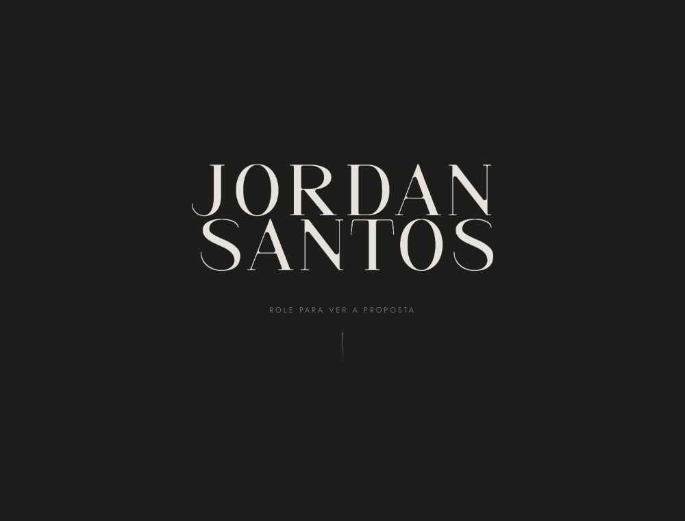
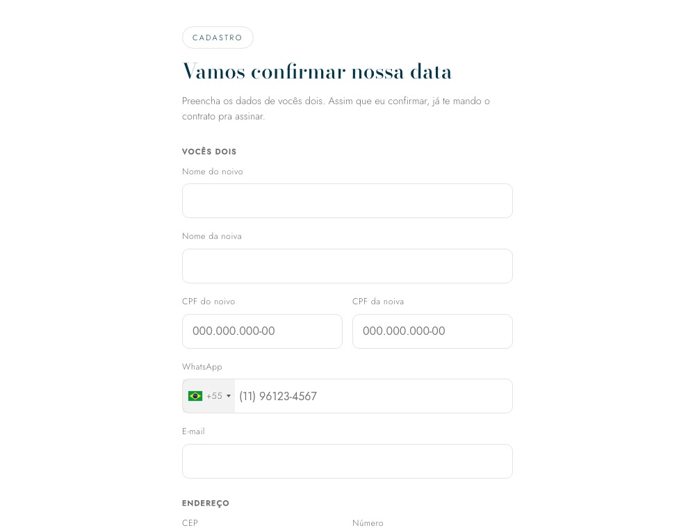

Área do Jordan


Guarde este comprovante se o contrato for questionado: ele liga a assinatura ao signatário e prova que o arquivo não foi alterado.
Abra o contrato e assine pra liberar o link do casal.
Mande este link pro casal. Quem tem o link consegue assinar, então mande direto pra eles.